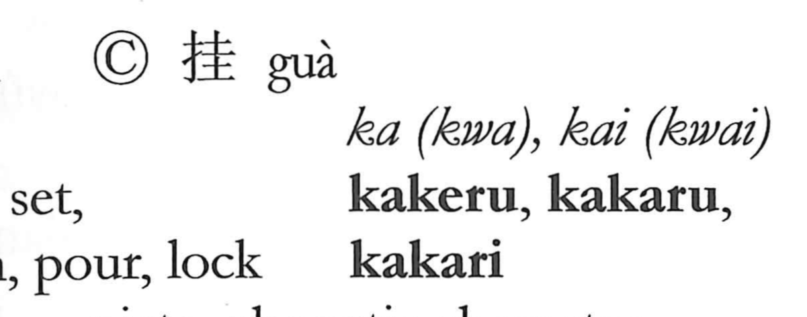

掛

Kun: kakeru, kakaru | On: kei, ka
to hang ・ to suspend ・ to set ・ to fasten ・ to assign
Explanation
A phono-semantic character: the hand component 扌 shows an action of the hand, while 卦 serves as the phonetic and recalls a clay tablet on which divination results were recorded—later the term for the Yijing’s trigrams and hexagrams. From this background, 掛 evoked the act of placing or setting objects—originally slipping and separating slender bamboo divination sticks between the fingers. In Japanese usage it naturally broadened to mean hanging or suspending something from above, and by extension assigning someone to be in charge (kakari).